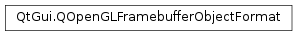

QOpenGLFramebufferObjectFormat¶
Synopsis¶
Functions¶
- def
__eq__(other) - def
__ne__(other) - def
attachment() - def
internalTextureFormat() - def
mipmap() - def
samples() - def
setAttachment(attachment) - def
setInternalTextureFormat(internalTextureFormat) - def
setMipmap(enabled) - def
setSamples(samples) - def
setTextureTarget(target) - def
textureTarget()
Detailed Description¶
The
PySide2.QtGui.QOpenGLFramebufferObjectFormatclass specifies the format of an OpenGL framebuffer object.A framebuffer object has several characteristics:
Number of samples per pixels.Depth and/or stencil attachments.Texture target.Internal texture format.Note that the desired attachments or number of samples per pixels might not be supported by the hardware driver. Call
QOpenGLFramebufferObject.format()after creating aPySide2.QtGui.QOpenGLFramebufferObjectto find the exact format that was used to create the frame buffer object.
-
class
PySide2.QtGui.QOpenGLFramebufferObjectFormat¶ -
class
PySide2.QtGui.QOpenGLFramebufferObjectFormat(other) Parameters: other – PySide2.QtGui.QOpenGLFramebufferObjectFormatCreates a
PySide2.QtGui.QOpenGLFramebufferObjectFormatobject for specifying the format of an OpenGL framebuffer object.By default the format specifies a non-multisample framebuffer object with no depth/stencil attachments, texture target
GL_TEXTURE_2D, and internal formatGL_RGBA8. On OpenGL/ES systems, the default internal format isGL_RGBA.See also
PySide2.QtGui.QOpenGLFramebufferObjectFormat.samples()PySide2.QtGui.QOpenGLFramebufferObjectFormat.attachment()PySide2.QtGui.QOpenGLFramebufferObjectFormat.internalTextureFormat()Constructs a copy of
other.
-
PySide2.QtGui.QOpenGLFramebufferObjectFormat.attachment()¶ Return type: PySide2.QtGui.QOpenGLFramebufferObject.AttachmentReturns the configuration of the depth and stencil buffers attached to a framebuffer object. The default is
QOpenGLFramebufferObject.NoAttachment.
-
PySide2.QtGui.QOpenGLFramebufferObjectFormat.internalTextureFormat()¶ Return type: PySide2.QtOpenGL.GLenumReturns the internal format of a framebuffer object’s texture or multisample framebuffer object’s color buffer. The default is
GL_RGBA8on desktop OpenGL systems, andGL_RGBAon OpenGL/ES systems.
-
PySide2.QtGui.QOpenGLFramebufferObjectFormat.mipmap()¶ Return type: PySide2.QtCore.boolReturns
trueif mipmapping is enabled.
-
PySide2.QtGui.QOpenGLFramebufferObjectFormat.__ne__(other)¶ Parameters: other – PySide2.QtGui.QOpenGLFramebufferObjectFormatReturn type: PySide2.QtCore.boolReturns
falseif all the options of this framebuffer object format are the same asother; otherwise returnstrue.
-
PySide2.QtGui.QOpenGLFramebufferObjectFormat.__eq__(other)¶ Parameters: other – PySide2.QtGui.QOpenGLFramebufferObjectFormatReturn type: PySide2.QtCore.boolReturns
trueif all the options of this framebuffer object format are the same asother; otherwise returnsfalse.
-
PySide2.QtGui.QOpenGLFramebufferObjectFormat.samples()¶ Return type: PySide2.QtCore.intReturns the number of samples per pixel if a framebuffer object is a multisample framebuffer object. Otherwise, returns 0. The default value is 0.
-
PySide2.QtGui.QOpenGLFramebufferObjectFormat.setAttachment(attachment)¶ Parameters: attachment – PySide2.QtGui.QOpenGLFramebufferObject.AttachmentSets the attachment configuration of a framebuffer object to
attachment.
-
PySide2.QtGui.QOpenGLFramebufferObjectFormat.setInternalTextureFormat(internalTextureFormat)¶ Parameters: internalTextureFormat – PySide2.QtOpenGL.GLenumSets the internal format of a framebuffer object’s texture or multisample framebuffer object’s color buffer to
internalTextureFormat.
-
PySide2.QtGui.QOpenGLFramebufferObjectFormat.setMipmap(enabled)¶ Parameters: enabled – PySide2.QtCore.boolEnables mipmapping if
enabledis true; otherwise disables it.Mipmapping is disabled by default.
If mipmapping is enabled, additional memory will be allocated for the mipmap levels. The mipmap levels can be updated by binding the texture and calling glGenerateMipmap(). Mipmapping cannot be enabled for multisampled framebuffer objects.
-
PySide2.QtGui.QOpenGLFramebufferObjectFormat.setSamples(samples)¶ Parameters: samples – PySide2.QtCore.intSets the number of samples per pixel for a multisample framebuffer object to
samples. The default sample count of 0 represents a regular non-multisample framebuffer object.If the desired amount of samples per pixel is not supported by the hardware then the maximum number of samples per pixel will be used. Note that multisample framebuffer objects can not be bound as textures. Also, the
GL_EXT_framebuffer_multisampleextension is required to create a framebuffer with more than one sample per pixel.
-
PySide2.QtGui.QOpenGLFramebufferObjectFormat.setTextureTarget(target)¶ Parameters: target – PySide2.QtOpenGL.GLenumSets the texture target of the texture attached to a framebuffer object to
target. Ignored for multisample framebuffer objects.
-
PySide2.QtGui.QOpenGLFramebufferObjectFormat.textureTarget()¶ Return type: PySide2.QtOpenGL.GLenumReturns the texture target of the texture attached to a framebuffer object. Ignored for multisample framebuffer objects. The default is
GL_TEXTURE_2D.
© 2018 The Qt Company Ltd. Documentation contributions included herein are the copyrights of their respective owners. The documentation provided herein is licensed under the terms of the GNU Free Documentation License version 1.3 as published by the Free Software Foundation. Qt and respective logos are trademarks of The Qt Company Ltd. in Finland and/or other countries worldwide. All other trademarks are property of their respective owners.